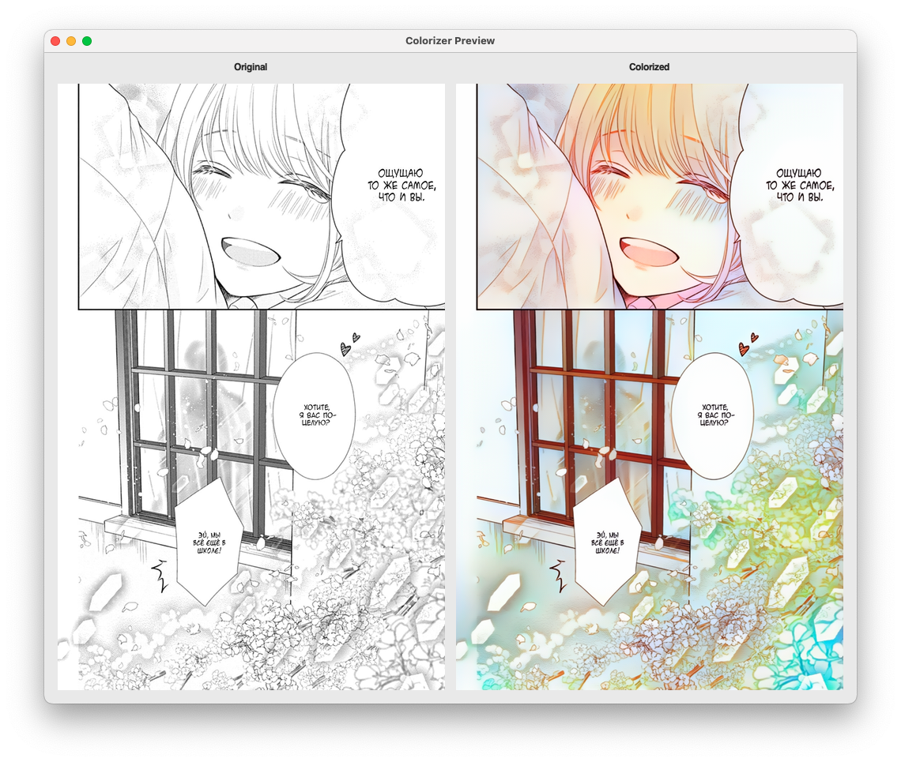
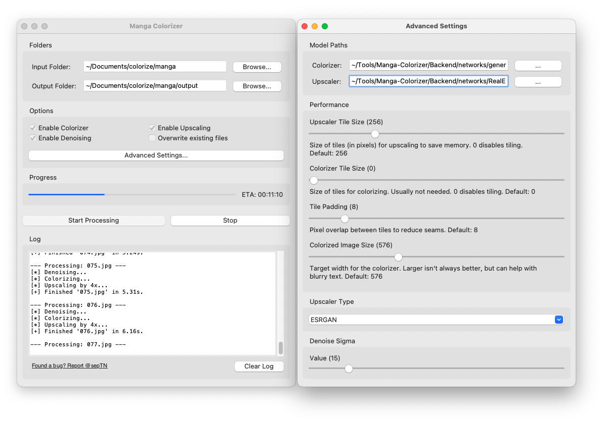

The offline magic tool! Colorize, upscale, and restore your manga chapters with one click.


Why use this fork? It's like having a 4th-dimensional pocket for your manga.
Process entire chapters at once! Just point to a folder and let it run. No more one-by-one drudgery.
Includes Real-ESRGAN to enlarge your pages 4x! Turn blurry low-res scans into crisp HD masterpieces.
Okay, it doesn't translate, but colorization makes reading raw Japanese manga much easier for learners!
Select a file or a folder.
Toggle Upscale or Denoise!
Watch the magic happen.
Master the settings to balance speed and quality.
Before running a full batch, click Preview to test settings on a random image from your input folder. Use Repick to try another random page.
Processes the image in chunks to save VRAM.
Lower this if you crash with "Out of
Memory".
Set to 0 to disable tiling (requires massive VRAM).
The target width for the colorization AI.
576px is the sweet spot. Higher values (e.g., 1024) might look sharper
but can introduce weird artifacts.
Strength of the denoising filter. Increase for very noisy/grainy scans, decrease for high-quality clean raws.
Follow these steps to build your own Manga factory.
// 1. Install App Requirements
pip install Flask Flask_Cors matplotlib numpy opencv_python_headless scikit_image einops// 2. Install PyTorch (Select your OS)
Mac (M1/M2/M3)
pip install torch torchvisionWindows/Linux (NVIDIA)
pip install torch torchvision --index-url https://download.pytorch.org/whl/cu118Required Model Weights
You need the generator weights to run the colorization.
Extract the downloaded zip into the Backend/networks/
folder.
Usually means you forgot to activate your environment or missed a dependency.
Run: conda activate manga-colorizer
Ensure PyTorch is using your GPU.
If on Nvidia, check `nvidia-smi`. If on Mac, ensure you installed the default `torch` package
which supports MPS.